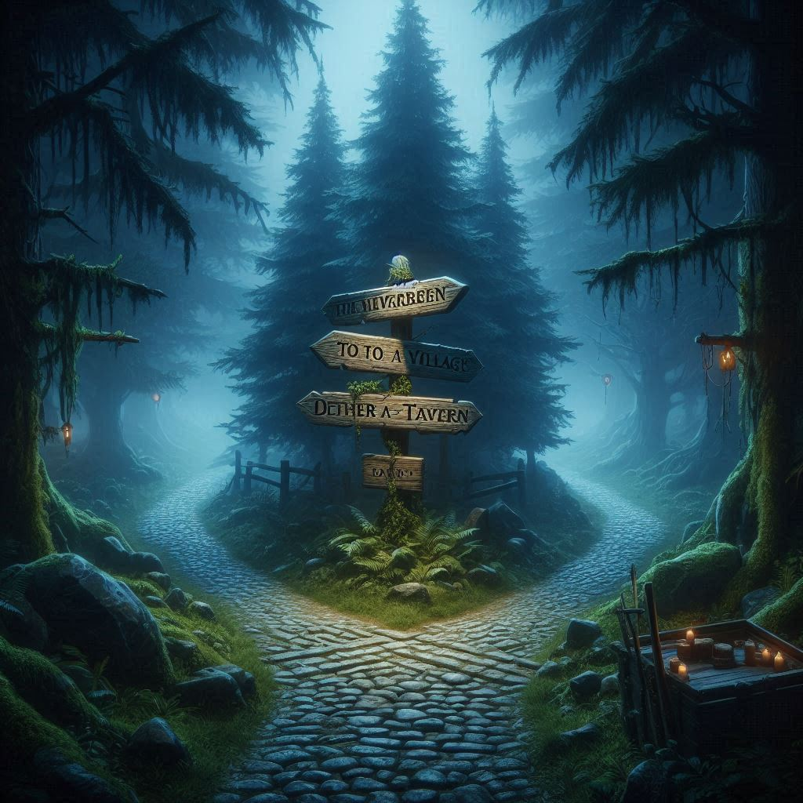

Der Kolben bleibt liegen, sein lila Schimmer verblasst langsam zwischen den Wurzeln.
Ich wende mich ab und stehe schon an der nächsten Kreuzung:
Links führt der Weg ins Dorf, zur Taverne, wo Rauch und Gelächter locken.
Rechts verschwindet der Pfad im dunklen Wald, wo das Licht der untergehenden Sonne kaum noch durchdringt.
Irgendwo in der Ferne knackt ein Ast.
Vor mir die Kreuzung: Links das Dorf, die Taverne, das Versprechen von Ruhe und Gesellschaft.
Rechts der dunkle Wald, wo die Schatten länger werden und das Laub unter meinen Stiefeln unnatürlich leise knirscht.
Wieder ist die Entscheidung schwer: Sicherheit oder Abenteuer?
